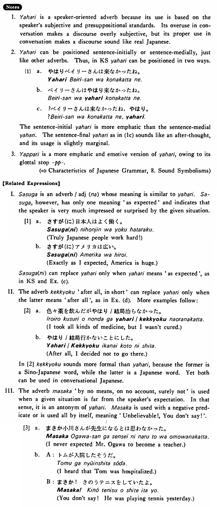

やはり (B. 538)
- (ks).
- ベイリーさんはやはり来なかった・来ませんでしたね。
- As expected, Mr. Bailey hasn't come, has he?
- (a).
- 雪子さんは今でもやはり奇麗です。
- Yukiko is still pretty.
- (b).
- お兄さんはテニスが上手ですが、弟さんもやっぱり上手ですよ。
- The other brother is good at tennis, and the younger brother is also good at it.
- (c).
- やはり日本のビールは美味しいですね。
- As expected, Japanese beer is good.
- (d).
- 僕はやはり結婚することにしました。
- I've decided to get married, after all.
